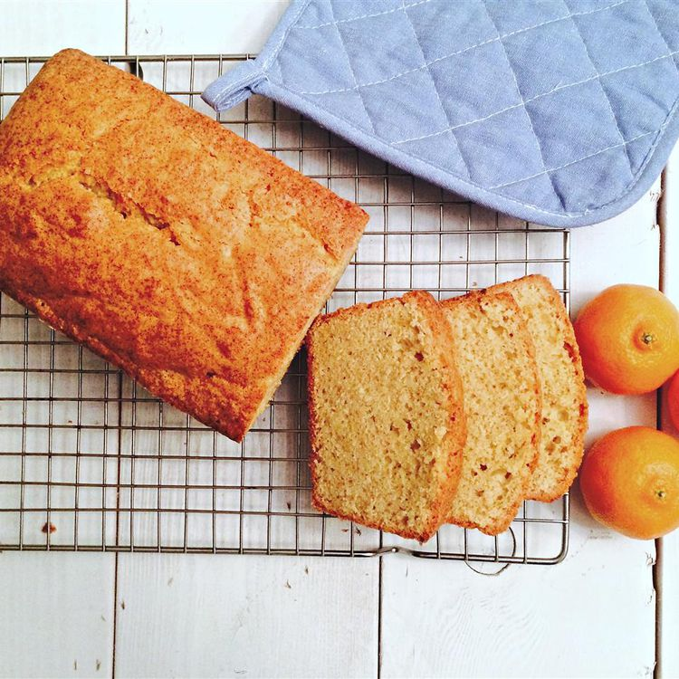

spiced Orange Olive Oil Cake

"Description"
With just a touch of sweetness, this olive oil cake has a hint of orange zest and five-spice powder. If you don't eat it all the first day, cut it into cubes and layer with whipped cream and oranges, or toast and slather with honey.
“Ingredients”
- 4 eggs
- ¾ cup white sugar
- ⅔ cup extra-virgin olive oil
- 2 tablespoons fresh orange zest
- 1 teaspoon Chinese five-spice powder
- 1 ½ cups all-purpose flour
- 1 tablespoon baking powder
- pinch salt
“steps”
- Preheat oven to 350 degrees F (175 degrees C). Lightly oil and flour a loaf pan.
- Beat eggs in a bowl until lightened in color. Add sugar, olive oil, orange zest, and five-spice powder and beat until smooth. Fold flour, baking powder, and salt into egg mixture until batter is just mixed. Pour batter into the prepared loaf pan.
- Bake in the preheated oven until a toothpick inserted in the center comes out clean, about 45 minutes. Cool in the pan for 10 minutes. Remove cake from the pan and cool on a wire rack.
Home
page